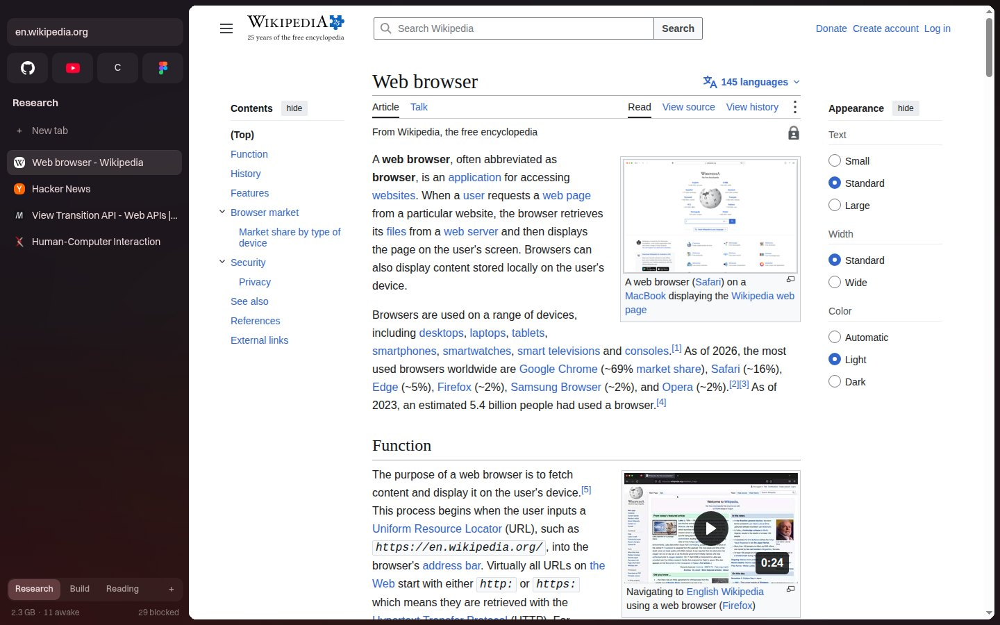
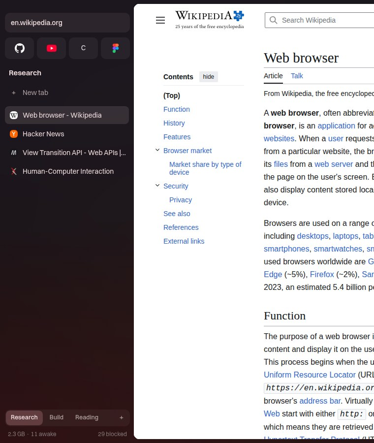
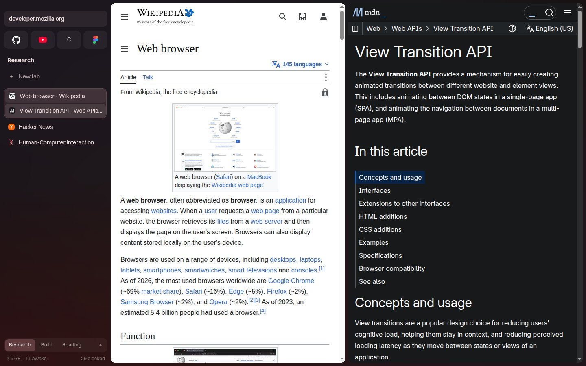
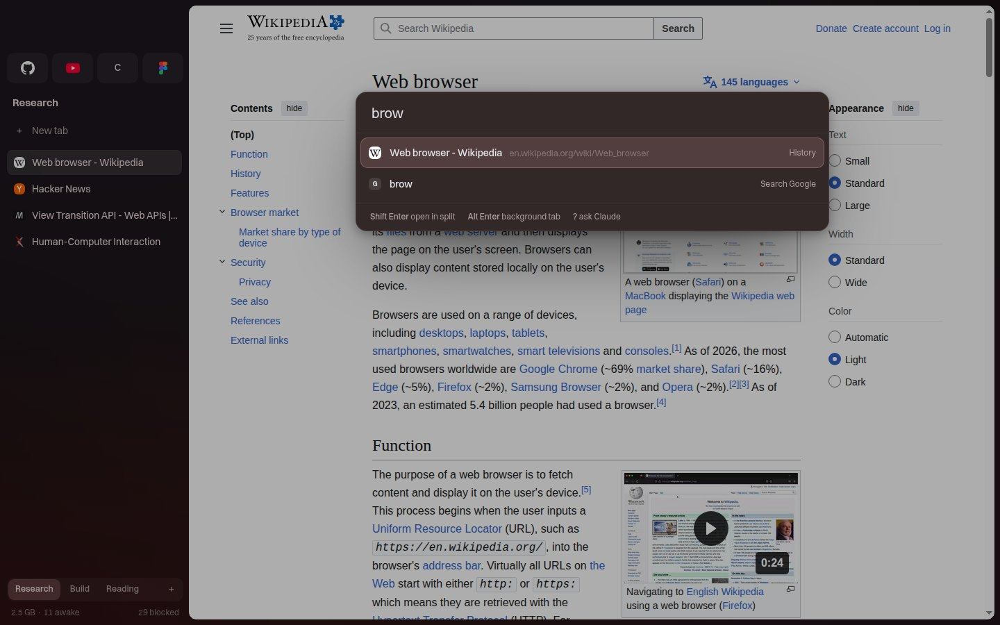
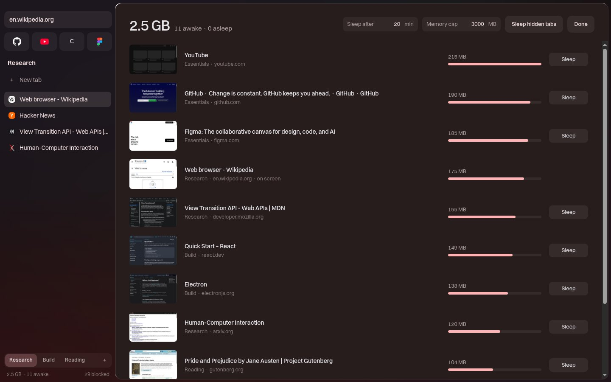
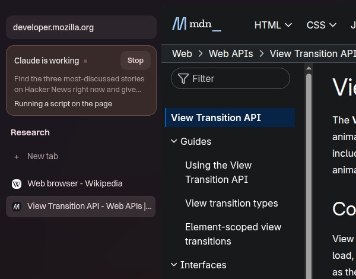
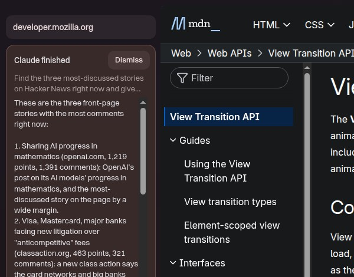

Drift
For those who can't find the browser best for them.
A Chromium browser for Linux with spaces you swipe between, splits you drag into place, tabs that sleep on their own, and Claude built in, working in the background while you keep browsing. It idles at a fraction of Brave's CPU.

One space per thing you're doing.
Research, a build, a trip. Each space keeps its own tabs and color. Swipe two fingers across any page, or press Ctrl Alt and an arrow, to slide to the next one.
Sites you use everywhere stay pinned at the top of every space. The sidebar tucks away until your pointer touches the left edge, so pages get the whole window.

Drag a tab onto a page to split it.
Drop it on an edge and the panes spring into place. Drag the divider to resize, split again inside a split, and pull a tab back out when you're done.

One bar for everything.
Ctrl T searches your open tabs, history, bookmarks and every command at once. Shift Enter opens the result in a split, Alt Enter in the background.
Start with ? and the rest goes to Claude.

Tabs that look after themselves.
A tab you haven't looked at for 30 seconds drops its caches. One you haven't touched for 20 minutes goes to sleep and wakes when you click it. Set a memory cap and Drift sleeps the oldest tabs to stay under it.
Ctrl Shift M shows what every tab costs, live.

Hand it to Claude and keep browsing.
Ask for something and Claude works in its own Agent space, with your logins, in tabs you never have to look at. Your view doesn't move. The sidebar shows each step, and you can stop it any time.
It reads text CAPTCHAs, works out why a form won't submit, and only stops for things that need you, like a code from your phone.
Drift also ships an MCP server, so Claude Code or any other agent can drive it the same way.


Lighter than Brave where it counts.
Both browsers open the same 8 real sites, then sit idle. Brave keeps working in the background; Drift mostly doesn't.
Idle CPUlower is better
Processeslower is better
Memorylower is better
Linux, headless, 8 tabs, total memory across every browser process (PSS) and CPU over a 20 second idle window, averaged over several rounds. Memory is close; the CPU gap is the big one. Run it yourself with node scripts/bench.mjs drift and node scripts/bench.mjs brave.
Your terminal is a remote.
Everything the sidebar can do, the drift command can do too, over a local socket. Read pages as Markdown, click, type, take screenshots, move tabs between spaces. Add --json to script it.
$ drift open github.com --split right $ drift md @2 # the page as Markdown $ drift click active "text:Sign in" $ drift type active "input[name=q]" "hello" --submit $ drift shot active -o page.png --full $ drift ws new Research $ drift ask "find a cheap flight to Austin on Friday" $ drift import zen # passwords and cookies
Private without thinking about it.
Blocking
Ads, trackers, cookie banners, and the URLhaus malware and phishing lists. Pages wait for the blocker, so nothing loads unfiltered.
Passwords
Sealed with your system keyring. Autofill only offers a site its own logins, and only after a real click.
Private spaces
In-memory cookies and storage, no history, no extensions. Gone when the space closes.
Cleaner links
http upgrades to https, and tracking parameters like utm and fbclid are stripped before the request leaves.
Bring your stuff
Imports bookmarks, history, extensions, logins and cookies from Brave, and logins and cookies from Zen or Firefox.
Chrome extensions
Install from the Chrome Web Store with one click. Settings that extensions save through sync keep working.
Install
Linux with Node 22 or newer. Drift runs on Wayland or X11 and picks up your matugen or GTK colors if you have them.
To use Ask Claude, install Claude Code and sign in once.
$ git clone https://github.com/sisiphamus/drift-browser $ cd drift-browser $ npm install $ npm run build $ npx electron . # optional: let Claude Code drive it $ claude mcp add drift -- node "$PWD/bin/drift-mcp.mjs"